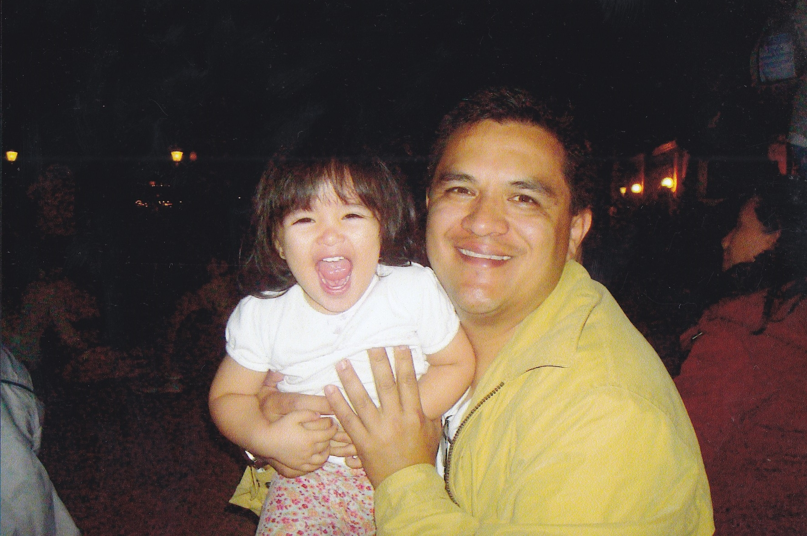

Sobre mí
Me dicen Miranda y nací el 31 de enero de 2006. Soy de El Salvador y me gusta mucho la tecnología y la programación. Siempre me ha gustado aprender cosas nuevas, descubrir temas que me llamen la atención y, sobre todo, poder utilizar lo que aprendo para ayudar a los demás. Entre mis hobbies están hornear postres, ver películas y series, escuchar música y jugar videojuegos. En mi tiempo libre también estudio francés, un idioma que me gusta mucho, y disfruto pasar tiempo con mi familia y mis amigos, ya que para mí esos momentos son muy importantes. Algo interesante sobre mí es que me encanta hacer manualidades y tocar el piano. También disfruto mucho las películas de amor y de suspenso. Una de mis formas favoritas de demostrar cariño es haciendo cartitas, porque siento que puedo expresar mis sentimientos de una manera más personal y especial. Me considero una persona curiosa, creativa y con muchas ganas de seguir aprendiendo y viviendo nuevas experiencias.
Estudios
- 2011-2025 Colegio Cristiano Josue
- 2025-Presente Escuela Superior de Economia y Negocio.
Momentos importantes




Contacto
gabriela.mirandar31@gmail.comTelefono: +(503) 7263-7373